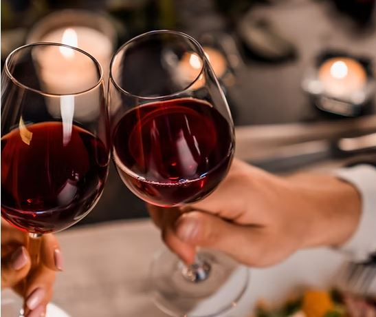

Solución del Reto 2
Repartiendo el vino 🍷

Tenían: un pellejo de 8 L lleno, y pellejos de 5 L y 3 L vacíos.
El objetivo: conseguir exactamente 4 L para cada uno.
Pasos correctos (sin desperdiciar vino)
- Vierte del 8 → 5 → Estado: (8:3, 5:5, 3:0)
- Vierte del 5 → 3 → Estado: (8:3, 5:2, 3:3)
- Vierte del 3 → 8 → Estado: (8:6, 5:2, 3:0)
- Vierte del 5 → 3 → Estado: (8:6, 5:0, 3:2)
- Vierte del 8 → 5 → Estado: (8:1, 5:5, 3:2)
- Vierte del 5 → 3 (hasta llenar el 3) → Estado: (8:1, 5:4, 3:3)
- Vierte del 3 → 8 → Estado final: (8:4, 5:4, 3:0)
Resultado: hay 4 L en el pellejo de 8 y 4 L en el de 5 — cada hombre puede llevarse sus 4 litros.